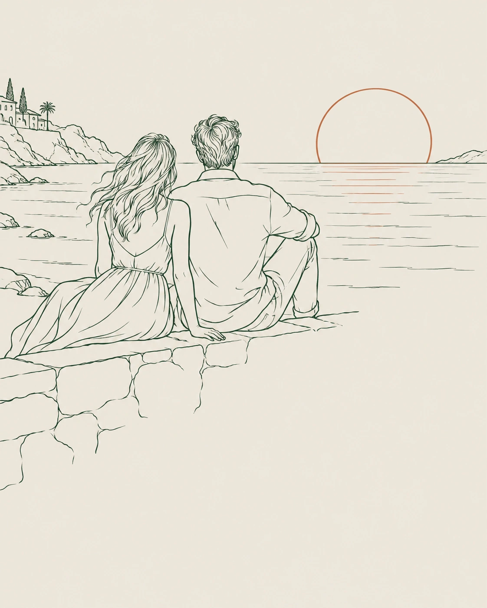
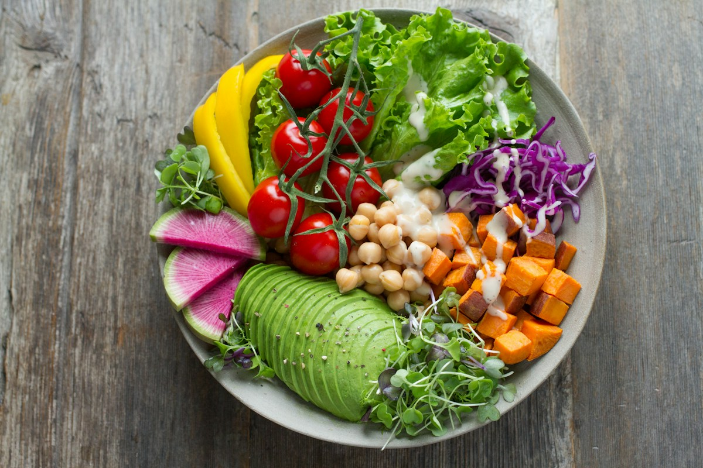

01 / AN ISLAND-INSPIRED WELCOME
Slow moments.
Shared plates.
Island days.
A little time together. A beautiful end to the day. A seat at the table.
Find Lā Kurumba on Yaddehimulla Road in Unawatuna. Settle in for breakfast and brunch, explore seafood and healthy dishes, or simply take your time over coffee and drinks.
Discover the table ↗AI-created sunset couple line art and illustrative food photography — a visual concept for the website.